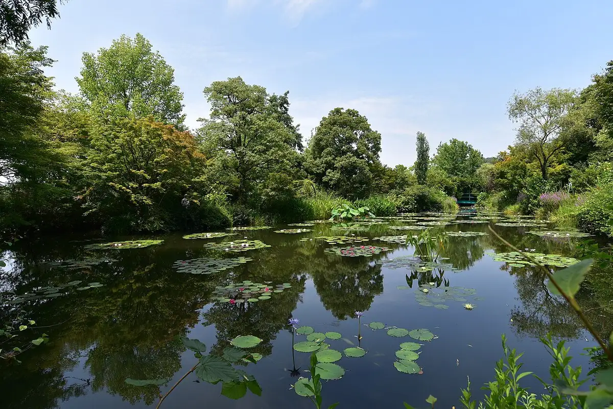
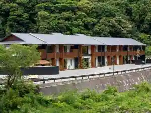
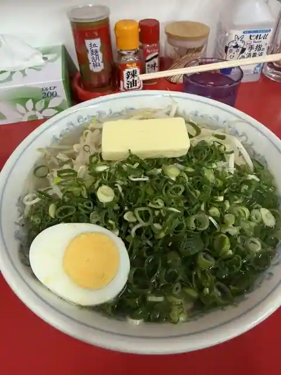
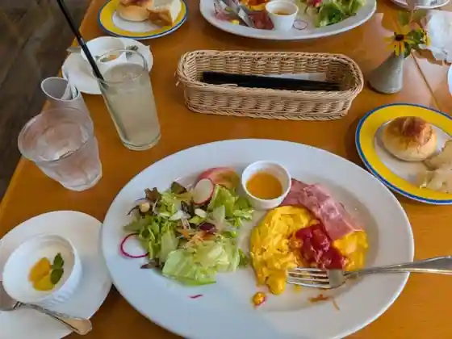
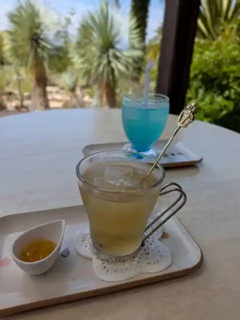
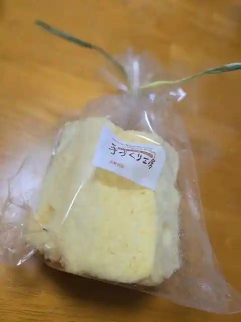
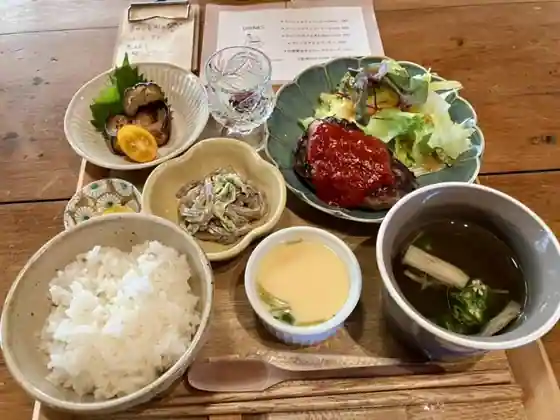
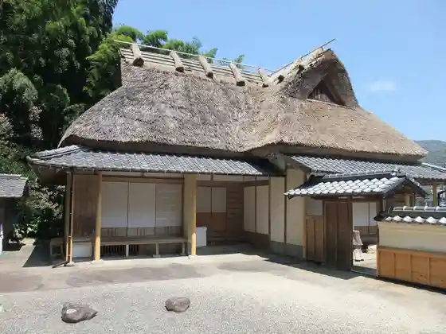
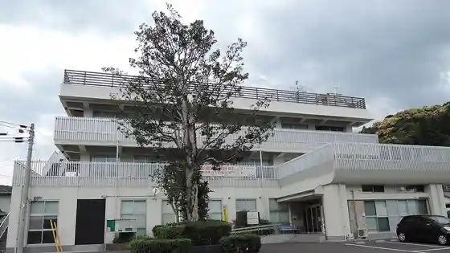

Kitagawa, Kochi: things to do, food and stays
Kitagawa · Kochi
Kitagawa
Highlighted on the Kochi map.

Stay
北川村温泉 ゆずの宿

Kitagawa Mura Onsen Yuzuno Yado
Inn at Kitagawamura Onsen in Kojima, Kitagawa.
Dining
いごっそラーメン店長

Igosso Ramen Tencho
レストラン モネの家

Restaurant Mone No Ie
カフェ・リヴィエラの小屋

Cafe Riviera No Koya
モネの庭 手づくりパン工房

Mone No Niwa Tezu Kuri Bakery Kobo
CAFE 晴晴

CAFE Sei Sei
慎太郎食堂
Shintaro Shokudo
池田柚華園
Ikeda Yuzu Hanazono
さかや
Sakaya
Sights
Kitagawa Mone no Niwa Marumottan
Nakaoka Shintaro Kan
Nakaoka Shintaro Seika

Kitagawa Town Hall

Yanase Dam
Horiganama Hashi
Nakaoka Shintaro Zo